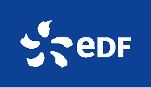
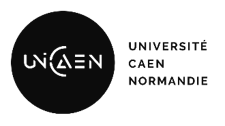
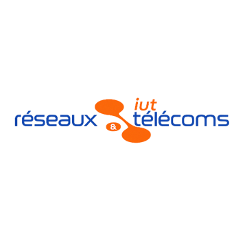

L'Entreprise
EDF et la Centrale Nucléaire de Flamanville


EDF et la Centrale Nucléaire de Flamanville
EDF (Électricité de France) est un acteur majeur de l'énergie en France et dans le monde. Le groupe intervient sur l'ensemble de la chaîne de valeur énergétique :
EDF s'engage activement dans la transition énergétique et la lutte contre le changement climatique :
Mon alternance se déroule au sein d'EDF dans la centrale nucléaire de Flamanville. Au sein de cette structure, j'ai intégré le service DIGIT qui assure la gestion, l'exploitation et la maintenance des infrastructures informatiques et télécoms locales de la centrale.
La centrale nucléaire de Flamanville est située dans la Manche, en Normandie.
DIGIT est une Direction nouvellement créée le 1er janvier 2025 au sein de la DTEO (Direction Transformation et Efficacité Opérationnelle) dans le cadre de la réorganisation de la filière numérique.
En tant qu'opérateur IT (Informatique et Télécommunication), DIGIT interne à EDF connaît les enjeux et les métiers de l'ensemble du Groupe (EDF SA et filiales, métiers industriels et tertiaires), étant à leur service et acteur central de l'industrialisation du numérique du Groupe.
Un opérateur IT est garant d'un haut niveau de performance opérationnelle et économique du SI, avec des services optimisés de bout en bout, du poste de travail jusqu'au composant de l'infrastructure.
Il est orienté clients et utilisateurs, avec des services simples à utiliser, ainsi qu'une écoute permanente, une proximité et un appui permettant une meilleure maîtrise des enjeux métiers et adaptation de nos services aux évolutions de contexte et de technologie.
L'USM (Unité Services Métiers) a pour mission d'opérer les services Informatiques et Télécoms aux métiers du Groupe EDF. Il apporte des solutions informatiques et de télécommunications adaptées et performantes afin de répondre au besoin fonctionnel d'un client interne/métier de bout en bout.
Un client interne à EDF c'est un agent EDF ou un service EDF qui a besoin d'un service ou d'un support au sein du CNPE.
Au sein du CNPE de Flamanville, je me situe précisément dans la branche DTEO du service DIGIT qui fait partie de l'USM. On est sur un SNT donc un Site Nucléaire et Thermique. Au sein du site, nous travaillons avec tous les services, on est tous rattachés aux autres. Par exemple, nos acteurs majeurs sont la MOA (Maîtrise d'Ouvrage) et le service SI (Sécurité Informatique).
L'équipe DIGIT de FLAMANVILLE se compose de :
Nous avons différents acteurs tels que la MOA et la MOE (Maîtrise d'Œuvre).
La Maîtrise d'Ouvrage (MOA) traduit une demande du service en fonction du catalogue de DIGIT. Elle exprime un besoin et pas une solution, car c'est à nous d'apporter une solution technique, de la proposer et de la mettre en œuvre.
La Maîtrise d'Œuvre (MOE - DIGIT) peut réaliser les actions ou bien sous-traiter des activités vers nos partenaires (Ensio, Econocom, Omexom, etc.).
Pour traiter ou envoyer les différentes demandes, on utilise plusieurs outils :
Un service du site (ex : Chaudronnerie) peut exprimer un besoin (ex : Arrivée d'un nouvel utilisateur) et demander à la MOA un ordinateur portable et un téléphone. Celle-ci traduit ce souhait disponible au catalogue DIGIT par une demande ITZMI qui est alors envoyée vers la MOE pour mettre à disposition un ordinateur et un téléphone vers le nouvel arrivant.